The beloved videogame about the difference
amongst humans minds.
The beloved videogame about the difference
amongst humans minds.
Inner Voices is a lite
Images will go here
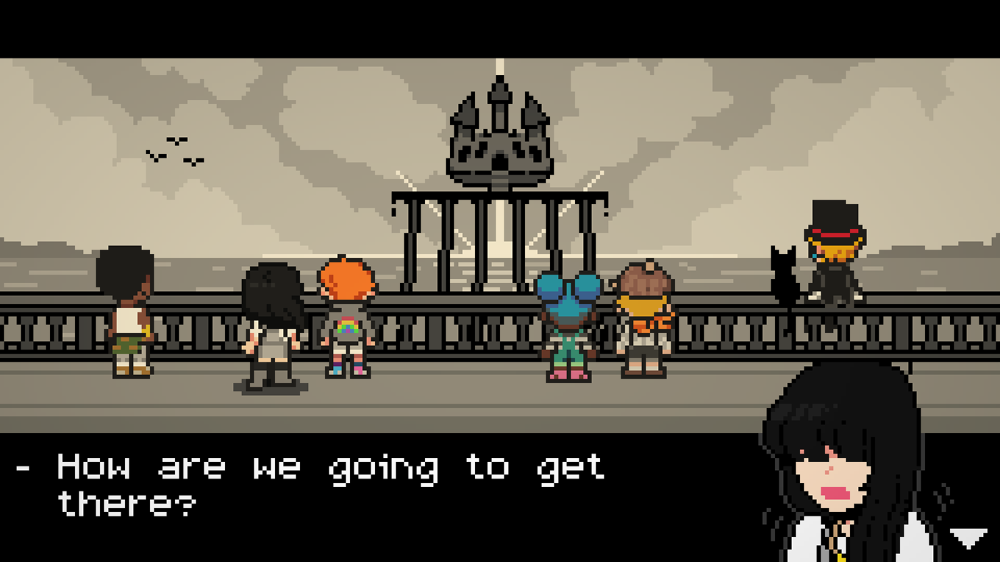
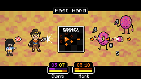
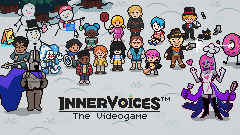
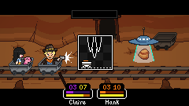
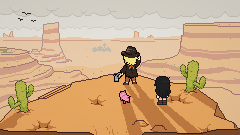
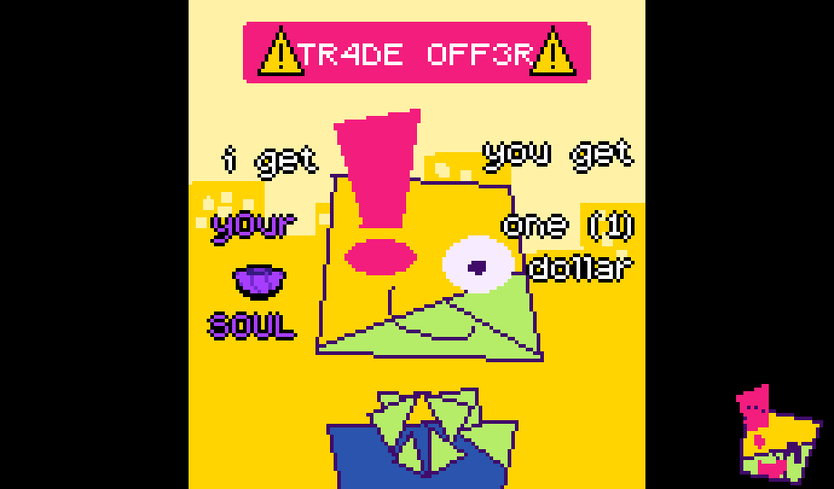
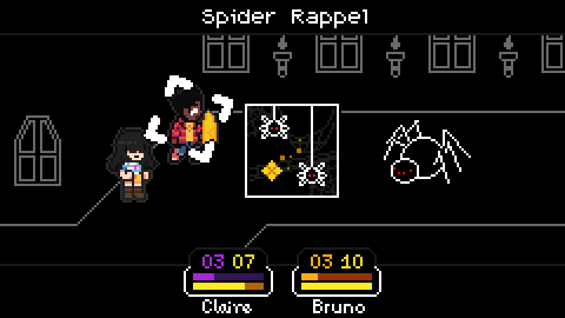
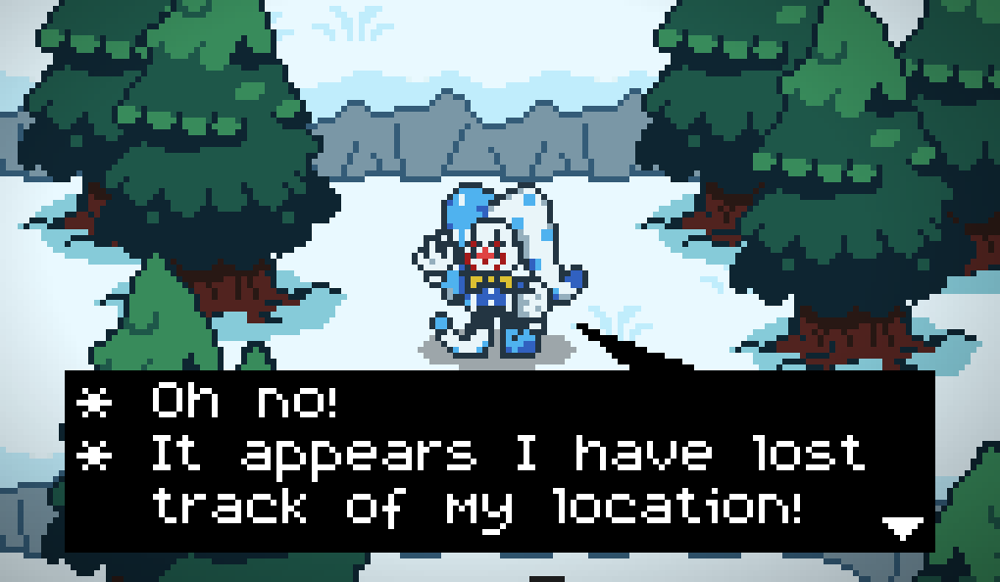
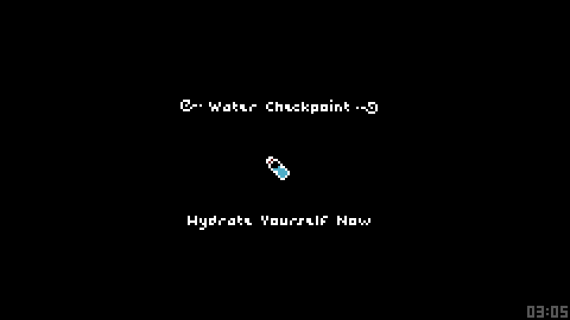
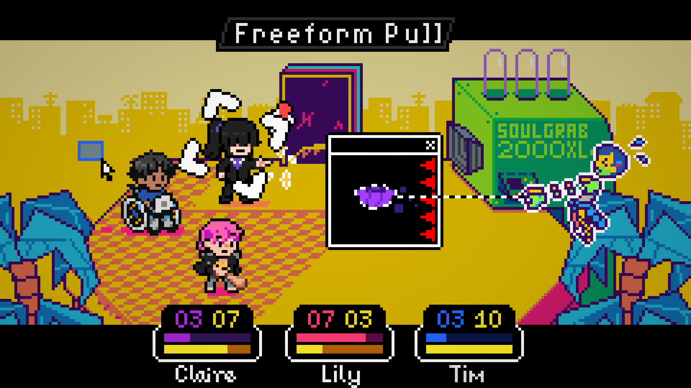
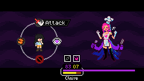
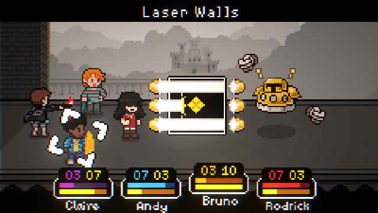
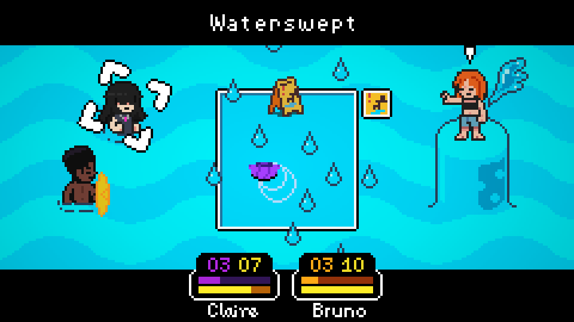
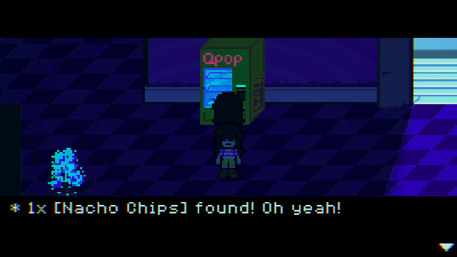
Resources about neurodivergence and mental health will go here
Images will go here